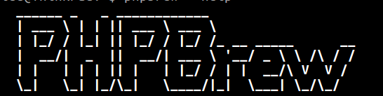

@(工作笔记)
phpbrew-record

[TOC]
phpbrew
中文文档 https://github.com/phpbrew/phpbrew/blob/master/README.cn.md
安装
curl -L -O https://github.com/phpbrew/phpbrew/releases/latest/download/phpbrew.phar
chmod +x phpbrew.phar
# Move the file to some directory within your $PATH
mv phpbrew.phar /usr/local/bin/phpbrew
初始设置
首先，初始化 Bash Shell 脚本：
phpbrew init
接着在 .bashrc 或 .zshrc 文件增加如下行：
[[ -e ~/.phpbrew/bashrc ]] && source ~/.phpbrew/bashrc
库路径设置
其次，请设置用于查找库文件的默认前缀，可选值有 macports，homebrew，debian，ubuntu 或是自定义路径。
对于 Homebrew 用户：
phpbrew lookup-prefix homebrew
基础用法
列出已知 PHP 版本：
phpbrew known
列出更多次要版本：
phpbrew known --more
编译属于你的 PHP
使用默认参数编译安装 PHP 非常简单：
$ phpbrew install 5.4.0 +default
这里我们推荐使用已包含绝大多数公共参数的 default（默认）参数集合。如果你需要「最小安装」，删掉default执行即可。
你可以使用-j或--jobs选项启用并行编译，例如：
$ phpbrew install -j $(nproc) 5.4.0 +default
编译完成后执行测试用例：
$ phpbrew install --test 5.4.0
测试环境，且包含调试信息：
$ phpbrew -d install --test 5.4.0
配置 php.ini
配置当前 PHP 版本的 php.ini 文件，只需执行如下命令即可：
$ phpbrew config
如需切换编辑器，可执行如下命令指定 EDITOR 环境变量：
export EDITOR=vim
phpbrew config
升级 phpbrew
执行 self-update 即可从 GitHub 的 master 分支安装 phpbrew 最新版本。
$ phpbrew self-update
已安装的 PHP
列出已安装的 PHP：
$ phpbrew list
你可以在 ~/.phpbrew/php 目录找到已安装的 PHP。例如，5.4.20 版本位于：
~/.phpbrew/php/5.4.20/bin/php
你可以手动修改其 php.ini：
~/.phpbrew/php/5.4.20/etc/php.ini
而 PHP 扩展的配置文件位于：
~/.phpbrew/php/5.4.20/var/db
~/.phpbrew/php/5.4.20/var/db/xdebug.ini
~/.phpbrew/php/5.4.20/var/db/apc.ini
~/.phpbrew/php/5.4.20/var/db/memcache.ini
等等...
mac 安裝
phpbrew install 7.2.34 +default -- \--with-zlib-dir=`brew --prefix zlib`